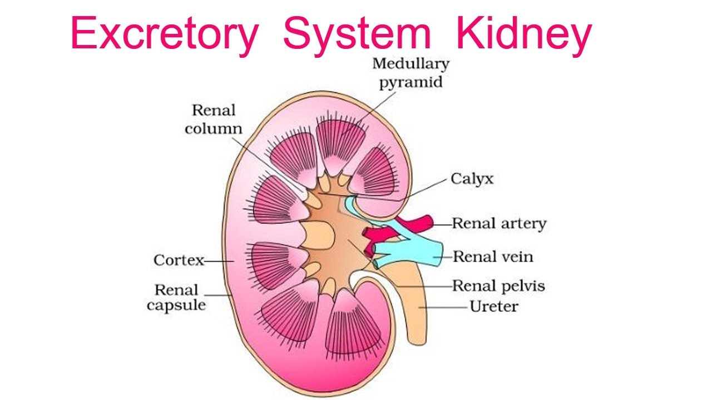
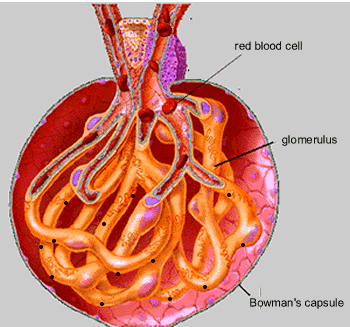
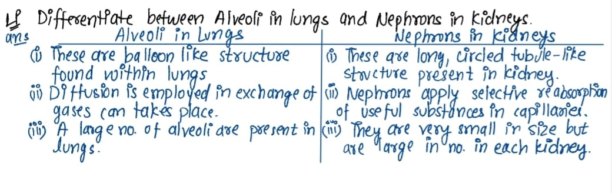
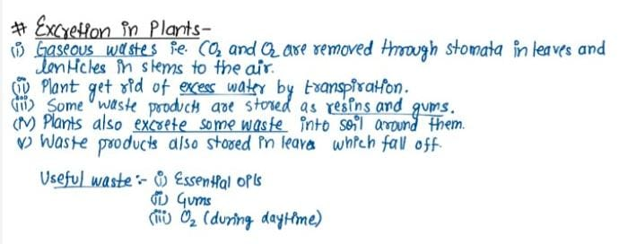

Excretion
i) Unicellular organism -
These organism get rid of waste products by diffusing it into surrounding through general body.eg-Amoeba , paramesium
iii) Multicellular Organism -
These organisms get rid of waste product by specialised organs for function of excretion.
Function of kidneys
i) It helps in removing exces water from body and nitrogeneous waste from blood in form of urine.
ii) Maintaining thr constant conc.
iii) Regulates the pH of blood.
# Excretion in Human Beings
The main function of Human Excretory System is to remove nitrogeneous waste such as urea from body .

Kidney -
The main organ of excretory system .It is reddish brown and bean shaped structure .The left kidney is placed higher than right.
It is caused by liver.

# Nephron -
It is basic filtering unit found in kidney . It is long coiled tubule , whose one end is connected to cup shaped structure called Bowman's capsule contain bundle of blood capilaries called glomerulus that is followed by tubular part nephron and loops at some places.

Functioning :-
i)Glomerules filters the blood passing through it .
ii)It also ensures to remove only harmful substance from body that include waste materials.
iii)The useful substances like glucose , amino acids , salts and major amount of water is selectively reabsorbed by tubular part of nephron.
iv)Some substances like K+ are actively secreted into the urine through tubule.
v)The collecting duct collects the urine and passes it to ureter.

